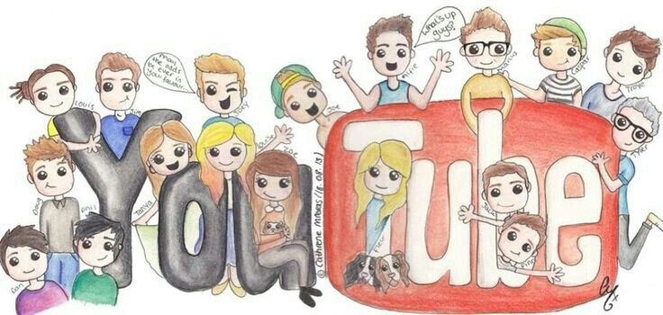

Welcome adventurer! Here lies a test to help you seek out the best
YouTube channel for you to watch. Your answers will determine who's
right for you! If you don't like your answer, you can always try again
and see if you get a different result!
Do You Enjoy Meme's?